Quantum Gases
In this chapter we’ll apply the theory of quantum statistical mechanics to the study of real gases. Particularly, we’ll study the behavior of gases of identical particles in both the high and low temperature limits. In the high temperature limit we’ll see we recover classical gas behavior. But in the low temperature limit interesting quantum effects happen. The behavior of a low temperature gas will depend primarily on whether the gas is composed of fermions of bosons. The theory of Fermi gases leads to behaviors like Fermi pressure and the Curie point, while the theory of Bose gases leads to behaviors like Bose-Einstein condensation and superfluidity.
Identical Particles
Recall the distinction we made in classical statistical mechanics between distinguishable particles and identical particles. A collection of particles was distinguishable if we could label each particle and in principle tell them apart. They were identical if this wasn’t true, if there was no way even in principle to tell apart one particle from another. We found it was very easy to account for this fact in classical statistical mechanics. If \(N\) particles were identical, we just needed to be sure to divide the partition function by \(N!\) to account for all possible permutations of those particles.
In quantum mechanics, the nature of identical particles is baked deep into the theory itself. There’s nothing arbitrary about them, since in quantum mechanics there really is no way even in principle to label a tiny particle without changing its state. Every fundamental particle is identical. From a theoretical perspective, identical particles arise due to the exchange postulate. Consider two particles. Suppose \(|\psi \rangle\) is the state of particle one, and \(|\phi \rangle\) is the state of particle two. Then we should expect the joint state where both of these occur is given by the tensor product of the two, namely \(|\psi \rangle |\phi \rangle \equiv |\psi \rangle \otimes |\phi \rangle\). The exchange postulate states that the only tensor product states allowed for real particles are those that are eigenvectors of the exchange operator \(P_\sigma\) defined by the relation \[ P_\sigma |\psi \rangle |\phi \rangle \equiv |\phi \rangle |\psi \rangle \ . \] Since exchange two particles twice gives the original state back, we must have \(P_\sigma^2 = 1\), meaning its eigenvalues must be \(\eta \equiv \pm 1\). Calling these eigenvectors \(|\Psi\rangle_\eta\), this means \[ P_\sigma |\Psi\rangle_\eta = \eta |\Psi\rangle_\eta \ . \] Any tensor product state of two particles must be one of these two eigenstates. It’s easy to see that these eigenstates are just the symmetric and antisymmetric parts of the tensor product state, \[ \begin{align*} |\Psi\rangle_{+} &= \frac{1}{\sqrt{2}} \big(|\psi \rangle |\phi \rangle + |\phi \rangle |\psi \rangle \big) \ , \\ |\Psi\rangle_{-} &= \frac{1}{\sqrt{2}} \big(|\psi \rangle |\phi \rangle - |\phi \rangle |\psi \rangle \big) \ . \end{align*} \] Particles whose exchange eigenstates are \(|\Psi\rangle_{+}\) are called bosons, while particles whose exchange eigenstates are \(|\Psi\rangle_{-}\) are called fermions. Notice that fermions satisfy the important condition that both particles can never been in the same state, since then we’d have \(|\Psi\rangle_{-} = 0\), a non-normalizable state. This is a general reflection of the Pauli exclusion principle, which states that no two fermions can occupy the same state. They must always be distinct. Bosons, however, don’t have to satisfy the exclusion principle. This one distinction makes the behavior of bosons and fermions very different from each other.
But how do we know which of the two eigenstates a given pair of particles should have? It turns out this comes down to their spin. If each particle has integer total spin, then that particle is a boson. If each particle instead has half-integer total spin, then that particle is a fermion. This fact is consequence of the spin-statistics theorem, an important theorem of relativistic quantum field theory. We won’t bother to prove it here. Electrons are the canonical example of fermions, with spin \(1/2\). Photons are the canonical example of bosons, with spin \(1\). There are many more of each of course. In fact all particles in nature can be broken down into these two classes depending on whether they have integer or half-integer total spin.
This is all true for two particle systems, but in statistical mechanics we’re interested in \(N\)-particle systems, where \(N\) is typically a huge number. We’ll just state the result for \(N\)-particle systems of bosons or fermions without proving anything.
Let \(P_\sigma\) be the permutation operator that permutes the indexes \(1, 2, \cdots, N\) to some permutation \(\sigma(1), \sigma(2), \cdots, \sigma(N)\). There will generally be \(N!\) such permutations. For a set of \(N\) bosons, we have \[ |\Psi\rangle_{+} = \frac{1}{\sqrt{N_{+}}} \sum_\sigma P_\sigma | \psi_1 \rangle | \psi_2 \rangle \cdots | \psi_N \rangle = \frac{1}{\sqrt{N_{+}}} \sum_\sigma | \psi_{\sigma(1)} \rangle | \psi_{\sigma(2)} \rangle \cdots | \psi_{\sigma(N)} \rangle \ . \] For a set of \(N\) fermions, we have \[ |\Psi\rangle_{-} = \frac{1}{\sqrt{N_{-}}} \sum_\sigma (-1)^{p(\sigma)} P_\sigma | \psi_1 \rangle | \psi_2 \rangle \cdots | \psi_N \rangle = \frac{1}{\sqrt{N_{-}}} \sum_\sigma (-1)^{p(\sigma)} | \psi_{\sigma(1)} \rangle | \psi_{\sigma(2)} \rangle \cdots | \psi_{\sigma(N)} \rangle \ . \] Here \(p(\sigma)\) denotes the parity of the permutation \(\sigma\). For even permutations \(p(\sigma)\) is some even number, meaning \((-1)^{p(\sigma)} = 1\). For odd permutations \(p(\sigma)\) is some odd number, meaning \((-1)^\sigma = -1\).
It’s easy to see that we can combine both equations into one by using \(\eta = \pm 1\) to write \[ \boxed{ |\Psi\rangle_\eta = \frac{1}{\sqrt{N_\eta}} \sum_\sigma \eta^{p(\sigma)} P_\sigma | \psi_1 \rangle | \psi_2 \rangle \cdots | \psi_N \rangle } \ . \] The factors \(N_\eta\) are whatever normalization factors are needed so that \(\langle\Psi|\Psi\rangle_\eta=1\). Intuitively, we’d expect that \(N_\eta = N!\) given there are \(N!\) permutations. This is true for fermions provided we insist all states \(\psi_k\) be unique to satisfy the exclusion principle. That is, \(N_{-} = N!\) for fermions, provided the sum is over distinct states only.
However, for bosons taking \(N_{+} = N!\) would mean we’re overcounting due to the fact that some of the states in the sum are equivalent. To correct for this, we also have to divide by \(\prod_k n_k!\), where \(n_k\) is the number of particles in state \(\psi_k\). To see why this is true, take the case of 3 bosons. Symmetrizing we’d have \[ |\psi_1 \psi_2 \psi_3 \rangle_{+} = \mathcal{N} \big(|\psi_1 \psi_2 \psi_3 \rangle + |\psi_2 \psi_3 \psi_1 \rangle + |\psi_1 \psi_3 \psi_2 \rangle + |\psi_2 \psi_1 \psi_3 \rangle + |\psi_3 \psi_2 \psi_1 \rangle + |\psi_3 \psi_1 \psi_2 \rangle\big) \ , \] where \(\mathcal{N}\) is whatever normalization constant is needed so that \(\langle \psi_1 \psi_2 \psi_3 | \psi_1 \psi_2 \psi_3 \rangle_{+} = 1\). In this case, it’s clear we have \(\mathcal{N}=\frac{1}{\sqrt{6}}\). Now suppose two of the states are the same, say \(\psi_1=\psi_2\). Then the above sum reduces to \[ \begin{align*} |\psi_1 \psi_1 \psi_3 \rangle_{+} &= \mathcal{N} \big(|\psi_1 \psi_1 \psi_3 \rangle + |\psi_1 \psi_3 \psi_1 \rangle + |\psi_1 \psi_3 \psi_1 \rangle + |\psi_1 \psi_1 \psi_3 \rangle + |\psi_3 \psi_1 \psi_1 \rangle + |\psi_3 \psi_1 \psi_1 \rangle\big) \\ &= 2\mathcal{N} \big(|\psi_1 \psi_1 \psi_3 \rangle + |\psi_1 \psi_3 \psi_1 \rangle + |\psi_3 \psi_1 \psi_1 \rangle\big) \\ &= \frac{1}{\sqrt{3}} \big(|\psi_1 \psi_1 \psi_3 \rangle + |\psi_1 \psi_3 \psi_1 \rangle + |\psi_3 \psi_1 \psi_1 \rangle\big) \ . \end{align*} \] For this sum to normalize properly, we’d instead need to take \(\mathcal{N} = \frac{1}{\sqrt{12}} = \frac{1}{\sqrt{3!2!1!}}\), which means \(N_{+} = N! \prod n_k!\). The set \(\{n_k\}\) of all such \(n_k\) are called occupation numbers since they represent the number of particles that occupy a given state.
For bosons, each particle can occupy whichever states it likes. All we require is that the total number of bosons stay conserved. This means bosons should satisfy the constraint \(\sum_k n_k = N\). We can think of occupation numbers as applying to fermions too. In that case, the exclusion principle requires each \(n_k=0,1\) only. They should still satisfy the constraint \(\sum_k n_k = N\). This means we can streamline notation if we like and express the normalization constant in both cases by \[ N_\eta \equiv N! \prod_k n_k! \ . \] It turns out we can even use occupation numbers to characterize the states of identical particles as well. Instead of representing \(|\Psi\rangle_\eta\) as a combination of product states \(| \psi_1 \rangle | \psi_2 \rangle \cdots | \psi_N \rangle\), we could represent the state \(|\Psi\rangle_\eta\) by indicating what the occupation numbers are for each state \(\psi_k\). That is, \(|\Psi\rangle_\eta = \big|\{n_k\} \big\rangle\).
For example, if all states are distinct we could represent \(|\psi_1 \psi_2 \psi_3 \rangle_{+}\) by the ket \(|1,1,1 \rangle\). If exactly two of the three states are equal, say \(\psi_1=\psi_2 \neq \psi_3\) then we could represent the state by \(|\psi_1 \psi_2 \psi_3 \rangle_{+} \equiv |2,1 \rangle\). In both cases each ket sums to the total particle number. This representation of a joint state is called a Fock space representation. Fock space representations of identical particles are often nice since we avoid the need to explicitly sum over all valid permutations.
Quantum Ideal Gas
With a discussion of identical particles out of the way we can now attempt to give a proper treatment to the quantum ideal gas. Recall in our prior treatment of the quantum ideal gas we had to assume all particles were distinguishable. In quantum mechanics this is generally forbidden, since even in principle we can’t imagine labeling any small particles without violating the uncertainty principle. We’ll now attempt to find the partition function for the quantum mechanical gas of identical particles. Since there is more subtlety involved in the quantum case than in the classical case, we’ll derive the partition function in two different representations, starting with the position representation.
Position Representation
Rather than calculate the partition function \(Z\) directly, we’ll start by finding the density matrix in the position representation. Recall for a single non-interacting particle in a box of volume \(V \gg \lambda_T^3\) we derived the formula \[ \langle \mathbf{x} | \rho_1 | \mathbf{x}' \rangle = \frac{1}{V} \exp\bigg(-\frac{(\mathbf{x}-\mathbf{x}')^2}{\lambda_T^2 / \pi} \bigg) \ . \] We’ll now attempt to derive a formula for the density matrix \(\big\langle \{\mathbf{x}\} | \rho_1 | \{\mathbf{x}'\} \big\rangle_\eta\) of \(N\) non-interacting particles in a box. The Hamiltonian is then \(H = \sum \frac{\mathbf{p}_i^2}{2m}\), which again means the basis of wavevector kets \(\big|\{\mathbf{k}\} \big\rangle\) diagonalizes the \(H\), with \[ H \big|\{\mathbf{k}\} \big\rangle = \sum_{i=1}^N \frac{\hbar^2 \mathbf{k}_i^2}{2m} \big|\{\mathbf{k}\} \big\rangle \ . \] Inserting two resolutions of the identity over both \(\{\mathbf{k}\}\) and \(\{\mathbf{k}'\}\) and simplifying, we have \[ \begin{align*} \big\langle \{\mathbf{x}\} | \rho | \{\mathbf{x}'\} \big\rangle_\eta &= \sideset{}{'}\sum_{\{\mathbf{k}\}} \sideset{}{'}\sum_{\{\mathbf{k}'\}} \big\langle \{\mathbf{x}\} | \{\mathbf{k}\} \big\rangle_\eta \ \big\langle\{\mathbf{k}\} |\rho| \{\mathbf{k}'\} \big\rangle \ \big\langle\{\mathbf{k}'\} | \{\mathbf{x}'\} \big\rangle_\eta \\ &= \frac{1}{Z}\sideset{}{'}\sum_{\{\mathbf{k}\}} \sideset{}{'}\sum_{\{\mathbf{k}'\}} \exp\bigg(-\frac{\beta\hbar^2}{2m} \sum_{j=1}^N \mathbf{k}_j^2 \bigg) \big\langle \{\mathbf{x}\} | \{\mathbf{k}\} \big\rangle_\eta \ \big\langle\{\mathbf{k}\} | \{\mathbf{k}'\} \big\rangle \ \big\langle\{\mathbf{k}'\} | \{\mathbf{x}'\} \big\rangle_\eta \\ &= \frac{1}{Z}\sideset{}{'}\sum_{\{\mathbf{k}\}} \exp\bigg(-\frac{\beta\hbar^2}{2m} \sum_{j=1}^N \mathbf{k}_j^2 \bigg) \big\langle \{\mathbf{x}\} | \{\mathbf{k}\} \big\rangle_\eta \ \big\langle\{\mathbf{k}\} | \{\mathbf{x}'\} \big\rangle_\eta \ .\\ \end{align*} \] Note the use of the restricted sum here. We’re constrained by the fact that there must be exactly \(N\) particles in the box, whether for fermions or bosons. To get rid of the constraint we just need to figure out how much we’re overcounting by in the sum. It turns out that overcounting factor is just \(\prod_{\mathbf{k}} n_{\mathbf{k}}! / N!\), so we can just do the substitution \[ \sideset{}{'}\sum_{\{\mathbf{k}\}} \rightarrow \sum_{\{\mathbf{k}\}} \frac{\prod_{\mathbf{k}} n_{\mathbf{k}}!}{N!} \ . \] We also need to make sure to sum over all permutations for each term \(\big\langle \{\mathbf{x}\} | \{\mathbf{k}\} \big\rangle_\eta\) and \(\big\langle\{\mathbf{k}\} | \{\mathbf{x}'\} \big\rangle_\eta\). This will give a double sum over permutations with different parities \(p\) and \(p'\), contributing a normalization factor \(N_\eta = N! \prod_{\mathbf{k}} n_{\mathbf{k}}!\) that fortunately happens to cancel the \(\prod_{\mathbf{k}} n_{\mathbf{k}}!\) prefactor from the constrained sum, \[ \begin{align*} \big\langle \{\mathbf{x}\} | \rho | \{\mathbf{x}'\} \big\rangle_\eta &= \frac{1}{Z}\sum_{\{\mathbf{k}\}} \frac{\prod_{\mathbf{k}} n_{\mathbf{k}}!}{N!} \exp\bigg(-\frac{\beta\hbar^2}{2m} \sum_{j=1}^N \mathbf{k}_j^2 \bigg) \big\langle \{\mathbf{x}\} | \{\mathbf{k}\} \big\rangle_\eta \ \big\langle\{\mathbf{k}\} | \{\mathbf{x}'\} \big\rangle_\eta \\ &= \frac{1}{Z}\sum_{\{\mathbf{k}\}} \frac{\prod_{\mathbf{k}} n_{\mathbf{k}}!}{N!} \exp\bigg(-\frac{\beta\hbar^2}{2m} \sum_{j=1}^N \mathbf{k}_j^2 \bigg) \sum_{\sigma,\sigma'} \frac{\eta^p \eta^{p'}}{N! \prod_{\mathbf{k}} n_{\mathbf{k}}!} \big\langle \{\mathbf{x}\} | P_\sigma \{\mathbf{k}\} \big\rangle \ \big\langle P_{\sigma'} \{\mathbf{k}\} | \{\mathbf{x}'\} \big\rangle \\ &= \frac{1}{Z(N!)^2} \sum_{\sigma,\sigma'} \eta^p \eta^{p'} \sum_{\{\mathbf{k}\}} \exp\bigg(-\frac{\beta\hbar^2}{2m} \sum_{j=1}^N \mathbf{k}_j^2 \bigg) \big\langle \{\mathbf{x}\} | P_\sigma \{\mathbf{k}\} \big\rangle \ \big\langle P_{\sigma'} \{\mathbf{k}\} | \{\mathbf{x}'\} \big\rangle \ .\\ \end{align*} \] We’ll now use the usual density of states approximation for the sums over all \(\{\mathbf{k}\}\). This of course assumes \(V \gg \lambda_T^3\) so that particle quantum interactions are relatively weak. Replacing the sum by an integral, and using the fact that \(\big\langle \{\mathbf{x}\} | P_\sigma \{\mathbf{k}\} \big\rangle\) is just the Fourier transform weighting factor in \(3N\) dimensions, we have \[ \big\langle \{\mathbf{x}\} | \rho | \{\mathbf{x}'\} \big\rangle_\eta \approx \frac{1}{Z(N!)^2} \sum_{\sigma,\sigma'} \eta^p \eta^{p'} \int \frac{d^{3N}\mathbf{k}}{(2\pi)^{3N}} \exp\bigg[\sum_{j=1}^N \bigg(-\frac{\beta\hbar^2}{2m}\mathbf{k}_j^2 + i\big(\mathbf{k}_{\sigma(j)} \cdot \mathbf{x}_j - \mathbf{k}_{\sigma'(j)} \cdot \mathbf{x}'_j\big) \bigg)\bigg] \ . \] This integral seems like another Gaussian integral, but we have to be careful here since the integration variables are over \(\{\mathbf{k}\}\) and not \(P_\sigma \{\mathbf{k}\}\) or \(P_{\sigma'} \{\mathbf{k}\}\). We can move the permutations onto the position vectors instead by simply inverting them to get \[ \begin{align*} \big\langle \{\mathbf{x}\} | \rho | \{\mathbf{x}'\} \big\rangle_\eta &= \frac{1}{Z(N!)^2} \sum_{\sigma,\sigma'} \eta^p \eta^{p'} \int \frac{d^{3N}\mathbf{k}}{(2\pi)^{3N}} \ \exp\bigg[\sum_{j=1}^N \bigg(-\frac{\beta\hbar^2}{2m}\mathbf{k}_j^2 + i\big(\mathbf{k}_j \cdot \mathbf{x}_{\sigma^{-1}(j)} - \mathbf{k}_j \cdot \mathbf{x}'_{\sigma'^{-1}(j)}\big) \bigg)\bigg] \\ &= \frac{1}{Z(N!)^2} \sum_{\sigma,\sigma'} \eta^p \eta^{p'} \prod_{j=1}^N \int \frac{d^{3}\mathbf{k}_j}{(2\pi)^{3N}} \ \exp\bigg[-\frac{\beta\hbar^2}{2m}\mathbf{k}_j^2 + i \mathbf{k}_j \cdot \big(\mathbf{x}_{\sigma^{-1}(j)} - \mathbf{x}'_{\sigma'^{-1}(j)}\big)\bigg] \\ &= \frac{1}{Z(N!)^2} \sum_{\sigma,\sigma'} \eta^p \eta^{p'} \prod_{j=1}^N \bigg(\frac{1}{\lambda_T^3} \exp\bigg[-\frac{(\mathbf{x}_{\sigma^{-1}(j)} - \mathbf{x}'_{\sigma'^{-1}(j)})^2}{\lambda_T^2/\pi}\bigg] \bigg) \ . \end{align*} \] Now, we can use the fact that the two permutations are now redundant by rewriting the double sum as a free sum over all \(N!\) permutations plus a sum over the relative permutations \(Q \equiv P'^{-1}P\) to get \[ \big\langle \{\mathbf{x}\} | \rho | \{\mathbf{x}'\} \big\rangle_\eta = \frac{1}{ZN!\lambda_T^{3N}} \sum_\tau \eta^q \exp\bigg[-\sum_{j=1}^N\frac{(\mathbf{x}_j - \mathbf{x}'_{\tau(j)})^2}{\lambda_T^2/\pi}\bigg] \ . \] Finally, to get the partition function, we can use the relation \(\text{tr } \rho = 1\) and solve for \(Z\) by integrating over all \(\{\mathbf{x}\}\) to get \[ \boxed{ Z = \frac{1}{N!\lambda_T^{3N}} \int d^{3N} \mathbf{x} \ \sum_\tau \eta^q \exp\bigg[-\sum_{j=1}^N\frac{(\mathbf{x}_j - \mathbf{x}_{\tau(j)})^2}{\lambda_T^2/\pi}\bigg] } \ . \] It’s hard to parse what this is saying as is. To make it easier to analyze let’s write out the permutations in order of increasing parity. The zero-parity term involves no permutations at all, that is \(Q=1\). In that case the exponential vanishes to give \(V^N\), which implies \(Z \approx \frac{1}{N!} \big(\frac{V}{\lambda_T^3})^N\). This is just the partition function for the classical ideal gas. We can also see right off where that \(N!\) term for identical particles came from in classical statistical mechanics. It falls right out of the quantum theory.
The next permutations involve one-parity terms of pairwise swaps. In this case, all but two of the exponentials vanish, giving a factor of \(V^{N-2}\). The remaining two terms we can convert to relative coordinates and integrate out another factor of \(V\). Since there are \(\binom{N}{2} = \frac{N(N-1)}{2}\) such terms, we get \[ Z \approx \frac{V^N}{N!\lambda_T^{3N}} \bigg(1 + \frac{N^2}{2V} \int d^3 \boldsymbol{x} \ \eta e^{- 2\pi r^2 / \lambda_T^2} \bigg) \approx \frac{V^N}{N!\lambda_T^{3N}} \bigg[1 + \frac{\eta N^2}{2V} \bigg(\frac{\lambda_T^2}{2}\bigg)^{3/2} + O\bigg(\frac{N^3}{V^2}\bigg)\bigg] \ . \] To see what’s going on let’s calculate the pressure. Letting \(n=\frac{N}{V}\) be the density, the expression for \(\beta P\) is evidently \[ \beta P = \frac{\partial \log Z}{\partial V} = n - \frac{\eta}{2} \bigg(\frac{\lambda_T^2}{2}\bigg)^{3/2} n^2 + O(n^3) \ . \] This is clearly a virial expansion in terms of some kind of interaction potential \(u(r)\). The second virial coefficient in this case is \[ B_2(T) = -\frac{\eta}{2} \bigg(\frac{\lambda_T^2}{2}\bigg)^{3/2} \ . \] For bosons this coefficient is negative, meaning the pressure is reduced from that of the classical ideal gas due to bosonic attraction. For fermions the opposite is true, meaning the pressure is increased due to fermionic repulsion. As \(T\) increases these effects become less and less important since \(\lambda_T \rightarrow 0\), becoming essentially negligible in the classical limit.
Now, recall from our discussion of classically interacting gases that virial expansions can be thought of as arising from a cluster expansion in terms of powers of the Mayer f-function \(f(r) \equiv e^{-\beta u(r)}-1\). This means we can think of the above expansion as arising from the presence of an effective potential \(u(r) = -k_B T \log (1 + f(r))\). In our case we can read off from the expansion for \(Z\) that \(f(r) = e^{-2\pi r^2 / \lambda_T^2}\), hence we have \[ u(r) \approx - k_B T \log\big( 1 + \eta e^{-2\pi r^2 / \lambda_T^2}\big) \ . \] This effective potential \(u(r)\) arises purely from the quantum mechanical behavior of identical particles, even if we assume they’re completely non-interacting as we would for the ideal gas. If we plot \(u(r)\) for \(\eta = \pm 1\) we get two potential curves like the ones shown in the following figure.
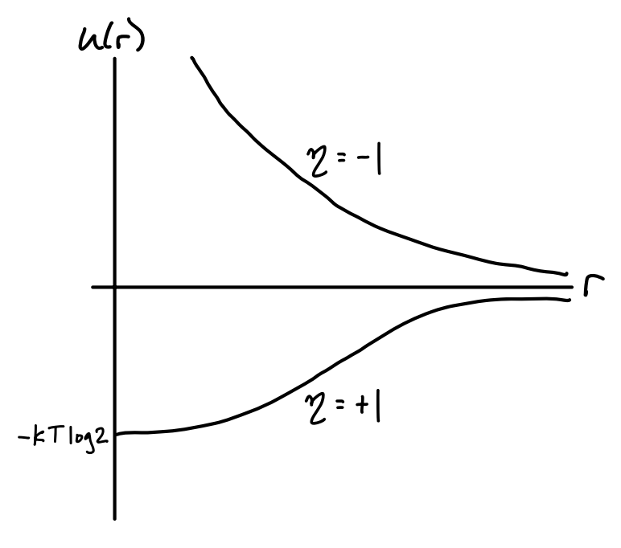
For fermions, \(u(r)\) goes to zero exponentially fast as \(r \rightarrow \infty\) and blows up as \(r \rightarrow 0\). This reflects the exclusion principle, which essentially forbids fermions from getting too close to each other. As the particles get farther apart this fermionic repulsion dies off exponentially fast.
For bosons, \(u(r)\) still dies off exponentially fast as \(r \rightarrow \infty\), except now from below due to the attractive nature of bosons. Instead of blowing up as \(r \rightarrow 0\) we instead get a finite value of \(u(0) \approx -k_B T \log 2\). The shape of this curve represents the fact that bosons prefer to be in the same state, yet they only feel this effect when very close to each other.
Of course, this only a valid potential when the density is sufficiently small. For denser gases we’d need to include higher order corrections arising from multi-body quantum exchange interactions. This further complicates what the potential for identical particles looks like, but the rough idea is basically the same. Qualitatively speaking, bosons attract, while fermions repel.
Energy Representation
While insightful, it’s pretty clear that the position representation is an unnatural way to compute the partition function for an ideal gas. We’ve already seen that the natural basis for this is the basis of wavevector states \(|\{\mathbf{k}\}\rangle\). In this basis, we have
\[ Z = \text{tr} \ e^{-\beta H} = \sideset{}{'}\sum_{\{\mathbf{k}\}} \langle \{\mathbf{k}\} | e^{-\beta \sum_{i=1}^N \varepsilon_{\mathbf{k}_i}} | \{\mathbf{k}\} \rangle_\eta \ , \]
where we’ve introduced the shorthand \(\varepsilon_\mathbf{k}\) to refer to the energy eigenvalue of a given particle with wavevector \(\mathbf{k}\). In the usual case of an ideal non-relativistic particle in a box, we’d have \(\varepsilon_\mathbf{k} = \frac{\hbar^2 \mathbf{k}^2}{2m}\). But in other cases it may differ. For example, we could also be describing a gas of ultra-relativistic particles in a box, where we’d have \(\varepsilon_\mathbf{k} = \hbar c |\mathbf{k}|\).
Again we’re dealing with a constrained sum due to the requirement that \(N = \sum n_\mathbf{k}\). Rather than write out the permutations explicitly as we did before, let’s instead work in Fock space this time by setting \(| \{\mathbf{k}\} \rangle_\eta = | \{n_\mathbf{k}\} \rangle\). We then have \[ Z = \sideset{}{'}\sum_{\{n_\mathbf{k}\}} \langle \{n_\mathbf{k}\} | e^{-\beta \sum_\mathbf{k} n_\mathbf{k} \varepsilon_\mathbf{k}} | \{n_\mathbf{k}\} \rangle = \sideset{}{'}\sum_{\{n_\mathbf{k}\}} e^{-\beta \sum_\mathbf{k} n_\mathbf{k} \varepsilon_\mathbf{k}} \ . \] Of course, we still haven’t removed the constraint. To do that we’ll use a trick we’ve seen before. Namely, we’ll switch to the grand canonical formulation where \(N\) is allowed to take on any positive integer. Doing that removes the constraint, giving \[ \mathcal{Z} = \sum_{N=0}^\infty e^{\beta\mu N} Z = \sum_{\{n_\mathbf{k}\}} e^{\beta\mu \sum_\mathbf{k} n_\mathbf{k}} e^{-\beta \sum_\mathbf{k} n_\mathbf{k} \varepsilon_\mathbf{k}} = \prod_\mathbf{k} \sum_{n_\mathbf{k}} e^{-\beta n_\mathbf{k}\big(\varepsilon_\mathbf{k} - \mu\big)} \ . \] Now, to do the sum over \(n_\mathbf{k}\) we have to distinguish between the case for bosons and fermions. For fermions \(n_\mathbf{k}=0,1\), which means we’re just summing two terms. For bosons \(n_\mathbf{k}=0,1,\cdots\), which gives a geometric series. We can combine both expressions into one by writing \[ \mathcal{Z}_\eta = \prod_\mathbf{k} \bigg(1 + \eta e^{-\beta \big(\varepsilon_\mathbf{k} - \mu\big)}\bigg)^{-\eta} \ . \] This means the log grand partition function is given by \[ \log\mathcal{Z}_\eta = -\eta \sum_{\mathbf{k}} \log \bigg(1 + \eta e^{-\beta \big(\varepsilon_\mathbf{k} - \mu\big)}\bigg) \ . \]
Quantum Distributions
As is typical with the grand canonical formulation, one of the first things we want to do is calculate \(N\). Since the sum over all occupation numbers must equal \(N\), we have \[ N = \frac{\partial \log\mathcal{Z}_\eta}{\partial (\beta\mu)} = -\eta \sum_{\mathbf{k}} \frac{\partial}{\partial(\beta\mu)} \log \bigg(1 + \eta e^{-\beta \big(\varepsilon_\mathbf{k} - \mu\big)}\bigg) = \sum_{\mathbf{k}} \frac{1}{e^{\beta(\varepsilon_\mathbf{k}-\mu)} - \eta} = \sum_{\mathbf{k}} \langle n_\mathbf{k} \rangle \ . \] Evidently then, the mean occupation numbers are given by the formula \[ \boxed{ \langle n_\mathbf{k} \rangle = \frac{1}{e^{\beta(\varepsilon_\mathbf{k}-\mu)} - \eta} } \ . \] This formula defines two distributions describing how many particles we can expect to occupy a given state when those particles are identical. For bosons this distribution is called the Bose-Einstein distribution, given by \[ \langle n_\mathbf{k} \rangle = \frac{1}{e^{\beta(\varepsilon_\mathbf{k}-\mu)} - 1} \ , \] while for fermions the distribution is called the Fermi-Dirac distribution, given by \[ \langle n_\mathbf{k} \rangle = \frac{1}{e^{\beta(\varepsilon_\mathbf{k}-\mu)} + 1} \ . \] In the dilute limit we expect each \(\langle n \rangle \ll 1\), which means \(e^{\beta(\varepsilon_\mathbf{k}-\mu)} \gg 1\). In that limit, both distributions reduce to the classical distribution we expect for a particle of energy \(\varepsilon_\mathbf{k}\), namely the Maxwell-Boltzmann distribution given by \[ \langle n_\mathbf{k} \rangle = e^{-\beta(\varepsilon_\mathbf{k}-\mu)} \ . \] We have seen how the Maxwell-Boltzmann distribution behaves already when we studied classical statistical mechanics. In the next few sections we’ll focus on the study of the Fermi-Dirac and Bose-Einstein distributions and their implications.
Equations of State
Now that we have the partition function we can proceed to calculate the equations of state for the quantum ideal gas. We’ll again assume that \(V \gg \lambda_T^3\) so that we can use the density of states to rewrite the log partition function as \[ \log\mathcal{Z}_\eta \approx -\eta\frac{g V}{(2\pi)^3} \int d^3 \mathbf{k} \ \log \bigg(1 + \eta e^{-\beta \big(\varepsilon_\mathbf{k} - \mu\big)}\bigg) \ . \]
Notice we’ve now introduced a factor \(g\) in the density of state conversion. This constant is there to reflect the fact that at the quantum level particles also contain a spin state \(s\), which gives an extra \(g=s(s+1)\) degeneracy to each state. For example, for spin-half fermions like electrons we’d have \(s=\frac{1}{2}\) and hence \(g=2\).
From here on we’ll again assume the energy states \(\varepsilon_\mathbf{k}\) are those for the particle in the box, \(\varepsilon_\mathbf{k} = \frac{\hbar^2\mathbf{k}^2}{2m}\). Let’s first calculate the expected particle number \(N\), or more conveniently the number density \(n \approx \frac{N}{V}\). Plugging in this choice of \(\varepsilon_\mathbf{k}\) and using the density of states conversion along with the fact that the integral is spherically symmetric, we have \[ n = \frac{1}{V} \sum_{\mathbf{k}} \langle n_\mathbf{k} \rangle \approx \frac{g}{(2\pi)^3} \int_0^\infty 4\pi k^2 dk \ \frac{1}{e^{-\beta\mu} e^{\beta\frac{\hbar^2 k^2}{2m}} - \eta} \ . \] Here it benefits to perform a change of variables. First we’ll reintroduce the fugacity \(z \equiv e^{\beta\mu}\) to provide a more convenient variable to tune than the chemical potential \(\mu\). Next we’ll use thermal deBroglie wavelength \(\lambda_T = \frac{h}{(2\pi m k_B T)^{1/2}}\) to rewrite the expression \(\frac{\beta\hbar^2}{m} = \frac{\lambda_T^2}{2\pi}\). Last, we’ll define a change of variable from \(k\) to a new variable \(x\) defined by \[ x \equiv \frac{\beta\hbar^2}{2m} k^2 = \frac{\lambda_T^2}{4\pi} k^2 \quad \Longrightarrow \quad \begin{cases} k = \frac{2\pi^{1/2}}{\lambda_T} x^{1/2} \\ dk = \frac{\pi^{1/2}}{\lambda_T} x^{-1/2} dx \\ \end{cases} \ . \] Plugging each of these expressions back into the integral and simplifying, we get \[ n = \frac{g}{(2\pi)^3} \frac{(2\pi^{1/2})^5}{2\lambda_T^3} \int_0^\infty dx \ \frac{x^{1/2}}{z^{-1} e^{x} - \eta} = \frac{g}{\lambda_T^3} \frac{1}{(1/2)!} \int_0^\infty dx \ \frac{x^{1/2}}{z^{-1} e^{x} - \eta} \ . \] Here we used the fact that \((1/2)! = \sqrt{\pi}/2\) for reasons we’ll understand shortly. Let’s now calculate the energy \(E\), or more conveniently \(\beta\varepsilon\), where the energy density \(\varepsilon \equiv \frac{E}{V}\), using a similar method. Using the same definitions, we have \[ \begin{align*} \beta\varepsilon &= \frac{\beta}{V} \sum_{\mathbf{k}} \varepsilon_\mathbf{k} \langle n_\mathbf{k} \rangle \\ &\approx \beta\frac{g}{(2\pi)^3} \int_0^\infty 4\pi k^2 dk \ \frac{\frac{\hbar^2 k^2}{2m}}{e^{-\beta\mu} e^{\beta\frac{\hbar^2 k^2}{2m}} - \eta} \\ &= \frac{g}{(2\pi)^3} \frac{(2\pi^{1/2})^3}{2\lambda_T^3} \int_0^\infty dx \ \frac{x^{3/2}}{z^{-1} e^{x} - \eta} \\ &= \frac{3}{2} \frac{g}{\lambda_T^3} \frac{1}{(3/2)!} \int_0^\infty dx \ \frac{x^{3/2}}{z^{-1} e^{x} - \eta} \ . \end{align*} \]
Finally, let’s calculate the pressure, or really \(\beta P\) again for simplicity. Recall by extensivity that we can write \(\log \mathcal{Z} = \beta P V\). Thus, \[ \begin{align*} \beta P &= \frac{1}{V} \log\mathcal{Z} \\ &\approx \frac{-\eta g}{(2\pi)^3} \int d^3 \mathbf{k} \ \log \bigg(1 + \eta e^{-\beta \big(\varepsilon_\mathbf{k} - \mu\big)}\bigg) \\ &= \frac{-\eta g}{(2\pi)^3} \int_0^\infty 4\pi k^2 dk \ \log \bigg(1 + \eta z e^{-\frac{\beta\hbar^2 k^2}{2m}}\bigg) \\ &= \frac{-\eta g}{(2\pi)^3} \frac{(2\pi^{1/2})^5}{2\lambda_T^3} \int_0^\infty dx \ x^{1/2} \log \bigg(1 + \eta z e^{-x}\bigg) \\ &= \frac{g}{\lambda_T^3} \frac{1}{(3/2)!} \int_0^\infty dx \ \frac{x^{3/2}}{z^{-1} e^x - \eta} \ . \end{align*} \] In the last line we used integration by parts to move the derivative from \(\log \big(1 + \eta z e^{-x}\big)\) to \(x^{1/2}\) and made use of the fact that the boundary terms vanish. The reason we did this was to show how all of the above expressions involve an integral that more or less looks alike apart from some parameter. Let’s give this class of integrals a name by defining \[ \boxed{ f_s^\eta (z) \equiv \frac{1}{(s-1)!} \int_0^\infty dx \ \frac{x^{s-1}}{z^{-1} e^x - \eta} } \ . \] We’ll study the properties of these functions in the next section. For now just observe that if we make this substitution, we can simplify the above expressions by writing \[ \boxed{ \begin{align*} n &= \frac{g}{\lambda_T^3} f_{3/2}^\eta(z) \\ \beta \varepsilon &= \frac{3}{2} \frac{g}{\lambda_T^3} f_{5/2}^\eta(z) \\ \beta P &= \frac{g}{\lambda_T^3} f_{5/2}^\eta(z) \\ \end{align*} } \ . \] We can immediately read off the important relation \(\varepsilon = \frac{3}{2} P\), which just says \(E = \frac{3}{2} PV\). We’ve seen this before for the classical ideal gas. Evidently the relationship holds for the quantum ideal gas as well, both for fermions and bosons. However, the relation between \(P\) and \(n\) is no longer as straightforward as it was in the classical case. To figure that relationship out we’ll need to get a series expansion for \(f_s^\eta(z)\) so we can express \(z\) as a function of \(n\) and hence get a virial expansion of \(P\) as a function of \(n\).
Special Functions
Given these special functions \(f_s^\eta(z)\) seem to occur so frequently in quantum statistics, perhaps we should study their properties a little bit before proceeding to a more detailed study of the quantum ideal gas. These special functions are a well-known class of mathematical functions known as polylogarithms. They’re a generalization of yet another class of special functions called zeta functions. Zeta functions, denoted \(\zeta_s\) are defined by the arithmetic series expression \[ \zeta_s \equiv \sum_{n=1}^\infty \frac{1}{n^s} = 1 + \frac{1}{2^s} + \frac{1}{3^s} + \cdots \ . \] For real-valued \(s\), zeta functions converge whenever \(s > 1\) and diverge otherwise. However, even when these functions do converge we can’t generally find \(\zeta_s\) in closed form for most values of \(s\). In fact we only have closed-form expressions for even integer values of \(s\). For example, it’s known that \(\zeta_2 = \frac{\pi^2}{6}\) and \(\zeta_4 = \frac{\pi^4}{90}\). Even \(\zeta_3 \approx 1.202\) doesn’t have a closed-form expression and has to be found numerically. It’s evidently a new irrational number now known as Apery’s constant.
Polylogarithms, usually denoted \(\text{Li}_s(z)\), generalize zeta functions by turning them into a power series in some variable \(z\), \[ \text{Li}_s(z) \equiv \sum_{n=1}^\infty \frac{z^n}{n^s} = z + \frac{z^2}{2^s} + \frac{z^3}{3^s} + \cdots \ . \] Evidently when \(z=1\) we just get back the zeta functions, i.e. \(\text{Li}_s(1) = \zeta_s\). Polylogarithms only converge in general when \(|z| < 1\), though they can be analytically continued to cover almost all of real \(z\). When \(z > 0\) the functions asymptote at \(z=1\) when \(s \leq 1\), otherwise they meet the \(z=1\) line at some finite value, which is of course \(\zeta_s\). Here’s a plot of the polylogarithms for a few different values of \(s\). The curves for \(s=0,\frac{1}{2},1\) go to infinity at \(z=1\), while those for \(s=\frac{3}{2},2,\frac{5}{2}\) are finite-valued at \(z=1\).
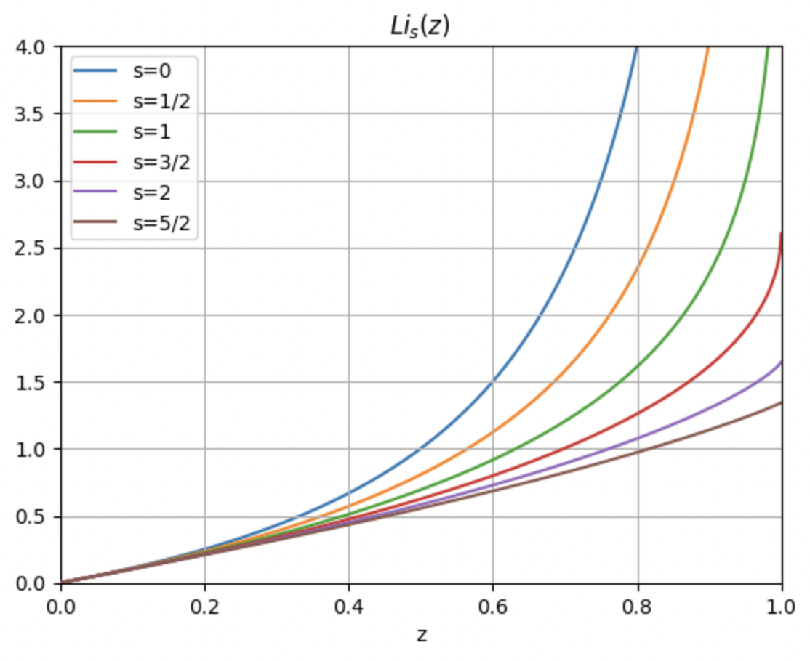
Since there’s no constant term in the series it evidently must be the case that \(\text{Li}_s(0)=0\). Moreover, when \(z\) is small we must have \(\text{Li}_s(z) \approx z\), which as we’ll soon see turns out to be important to us.
The name “polylogarithm” comes from the fact that the functions satisfy the differentiation ladder relationship \[ \frac{d}{dz} \text{Li}_s(z) = \frac{\text{Li}_{s-1}(z)}{z} \ , \] which combined with the fact that \(\text{Li}_1(z) = -\log (1-z)\) implies that when \(s\) is an integer these functions are just successive derivatives of logarithms. This ladder relation gives us an easy way to find other values of \(\text{Li}_s(z)\) provided we know the functional form for some \(s\), though it only works for finding integer steps of \(s\).
Perhaps most importantly for our purposes, polylogarithms can be re-expressed in an integral form that we’ll recognize. Observe that by using the expression for a geometric series plus the integral representation of the factorial function that we can rewrite the polylogarithm as \[ \begin{align*} \text{Li}_s(z) &= \sum_{n=1}^\infty \frac{z^n}{n^s} \\ &= \sum_{n=1}^\infty \frac{z^n}{(s-1)!} \frac{(s-1)!}{n^s}\\ &= \sum_{n=1}^\infty \frac{z^n}{(s-1)!} \int_0^{\infty} dx \ x^{s-1} e^{-nx} \\ &= \frac{1}{(s-1)!} \int_0^{\infty} dx \ x^{s-1} \sum_{n=1}^\infty \big(z e^{-x}\big)^n \\ &= \frac{1}{(s-1)!} \int_0^{\infty} dx \ \frac{x^{s-1}}{z^{-1} e^x - 1} \ . \end{align*} \] Note this also means we instantly have an integral expression for the zeta function as well by setting \(z=1\), \[ \zeta_s = \frac{1}{(s-1)!} \int_0^{\infty} dx \ \frac{x^{s-1}}{e^x - 1} \ . \] Evidently the integral form for \(\text{Li}_s(z)\) is just the expression for \(f_s^\eta(z)\) that we saw before when \(\eta = 1\)! That is, \(f_s^{+}(s) = \text{Li}_s(z)\) exactly. What about when \(\eta = -1\) though? We can get a similar relationship by just replacing \(z\) with \(-z\) in the series to get \(\text{Li}_s(z)=-\text{Li}_s(-z)\). We can combine the two expressions into one by writing \[ f_s^\eta(z) = \eta \text{Li}_s(\eta z) = \sum_{n=1}^\infty \frac{\eta^{n+1} z^n}{n^s} = z + \frac{\eta z^2}{2^s} + \frac{z^3}{3^s} + \frac{\eta z^4}{4^s} + \cdots \ . \] That is, the functions \(f_s^\eta(z)\) we’re seeing fall out of quantum statistics are just polylogarithms, with the caveat that when \(\eta=-1\) the series is alternating on even powers. This alternating behavior for \(\eta=-1\) means that those functions turn out to be defined for all \(z\), not just when \(|z| < 1\). In fact, we’ll see later that \(f_s^{-}(z) \sim \frac{1}{s!} (\log z)^s\) when \(z\) is really large.
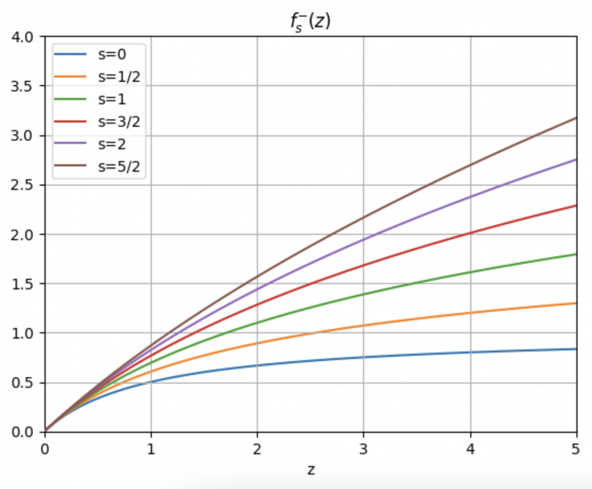
In either case, we can see that \(f_s^\eta(z) \approx z\) when \(z\) is small. Treating \(z\) as the fugacity, \(z\) will be small at high temperatures, meaning in the high temperature limit our equation of state becomes \(\beta P \approx n\). This expression is of course none other the classical ideal gas law \(PV = N k_B T\). Evidently the quantum ideal gases reduces to the classical ideal gas in the high temperature limit, as we’d expect, both for fermions as well as bosons. The distinction between the two types of particles washes out in a sense with higher temperatures.
But what about at lower temperatures? First let’s define \(d \equiv \frac{n \lambda_T^3}{g}\), which we’ll call the degeneracy factor for reasons we’ll see later. If we again want pressure as a function of density we’d need to invert the power series for \(d = d(z)\) to find \(z = z(d)\). We’ve seen before how to systematically do this. Starting with the power series for \(d = f_{3/2}^\eta (z)\) we have \[ d = z + \frac{\eta z^2}{2^{3/2}} + \frac{z^3}{3^{3/2}} + O(z^4) \ . \] Now suppose \(z\) can be expanded in a power series in \(d\) as \[ z = a_1 d + a_2 d^2 + a_3 d^3 + O(d^4) \ . \] When \(z\) is infinitesimal we see \(d \approx z\), which means \(a_1 = 1\). To get the higher order coefficients we’ll substitute this expression into the formula for \(d=d(z)\) and match powers. We have \[ \begin{align*} d &= \big(d + a_2 d^2 + a_3 d^3\big) + \frac{\eta}{2^{3/2}} \big(d + a_2 d^2 + a_3 d^3\big)^2 + \frac{1}{3^{3/2}} \big(d + a_2 d^2 + a_3 d^3\big)^3 + O(d^4) \\ &= \big(d + a_2 d^2 + a_3 d^3\big) + \frac{\eta}{2^{3/2}} (d^2 + 2 a_2 d^3) + \frac{1}{3^{3/2}} d^3 + O(d^4) \\ &= d + \bigg(a_2 + \frac{\eta}{2^{3/2}}\bigg) d^2 + \bigg(a_3 + 2 \frac{\eta}{2^{3/2}} a_2 + \frac{1}{3^{3/2}}\bigg) d^3 + O(d^4) \ . \end{align*} \] Setting the higher-order coefficients to zero, we get \(a_2 = - \frac{\eta}{2^{3/2}}\) and \(a_3 = \frac{1}{4} -\frac{1}{3^{3/2}}\). Thus, up to \(O(d^3)\) we have \[ z = d - \frac{\eta}{2^{3/2}} d^2 + \bigg(\frac{1}{4} -\frac{1}{3^{3/2}}\bigg) d^3 + O(d^4) \ . \] Plugging this expression back into \(\beta P\) and simplifying, we get \[ \begin{align*} \beta P &= \frac{g}{\lambda_T^3} \bigg(z + \frac{\eta}{2^{5/2}} z^2 + \frac{1}{3^{5/2}} z^3 + O(z^4)\bigg) \\ &= \frac{g}{\lambda_T^3} \bigg\{\bigg[d - \frac{\eta}{2^{3/2}} d^2 + \bigg(\frac{1}{4} -\frac{1}{3^{3/2}}\bigg) d^3\bigg] + \frac{\eta}{2^{5/2}} \bigg[d - \frac{\eta}{2^{3/2}} d^2 + \bigg(\frac{1}{4} -\frac{1}{3^{3/2}}\bigg) d^3\bigg]^2 \\ &+ \frac{1}{3^{5/2}} \bigg[d - \frac{\eta}{2^{3/2}} d^2 + \bigg(\frac{1}{4} -\frac{1}{3^{3/2}}\bigg) d^3\bigg]^3 + O(d^4)\bigg\} \\ &= \frac{g}{\lambda_T^3} \bigg[d - \frac{\eta}{2^{5/2}} d^2 + \bigg(\frac{1}{8} - \frac{2}{3^{5/2}}\bigg) d^3 + O(d^4) \bigg] \ . \end{align*} \] Finally, to get a virial expansion up to \(O(n^3)\) we substitute \(d = \frac{n \lambda_T^3}{g}\) to get \[ \beta P = n - \frac{\lambda_T^3}{g} \frac{\eta}{2^{5/2}} n^2 + \frac{\lambda_T^6}{g^2} \bigg(\frac{1}{8} - \frac{2}{3^{5/2}}\bigg) n^3 + O(n^4) \ . \] Notice how even with no interactions present in the quantum ideal gas we still get a virial expansion. In particular, notice the second virial coefficient \(B_2(T) = -\frac{\lambda_T^3}{g} \frac{\eta}{2^{5/2}}\). For bosons \(B_2\) is negative, meaning the pressure is reduced from that of the classical ideal gas. On the other hand, for fermions \(B_2\) is positive, meaning the pressure is increased from that of the classical ideal gas. It’s as if there are interactions present arising from quantum statistics, which we also saw more explicitly before using the position representation. In either case, since \(\lambda_T \rightarrow 0\) in the high temperature limit, \(\beta P \rightarrow n\) as we’d expect.
Degenerate Gases
We’ve largely gone as far as we can by treating bosons and fermions together. We’ve shown that in the classical limit of \(d=f_{3/2}^\eta (z) \ll 1\) the quantum ideal gas becomes the classical ideal gas, both for fermions and bosons. We’ve also shown how we can add in quantum corrections to the pressure at lower temperatures via a kind of virial expansion.
But what about in the other limit, the low temperature limit where \(d=f_{3/2}^\eta (z) \gg 1\)? In this degenerate limit expansions in powers of \(z\) no longer hold and we need to approach things differently. We’ll start by examining the degenerate limit for fermions, the so-called degenerate fermi gas. Afterwards we’ll separately look at the degenerate limit for bosons, the degenerate boson gas.
Degenerate Fermi Gas
To understand the behavior of fermions at low temperatures we need a different kind of representation for the polylogarithm, namely an asymptotic series that’s valid when \(z\) becomes infinitely large. We’ll need to derive an asymptotic series for \(f_s^{-}(z)\). We’ll derive a full expansion later. But for now we’ll focus on the extreme low temperature limit where \(T \approx 0\), meaning \(\log z \gg 1\). Recall that by definition we have \[ f_s^{-}(z) = \frac{1}{(s-1)!} \int_0^{\infty} dx \ \frac{x^{s-1}}{z^{-1} e^x + 1} \ . \] Now, observe that the integrand has the form \(x^{s-1} \langle n \rangle\) where \(\langle n \rangle = (z^{-1} e^x + 1)^{-1}\) is the expected occupation number. We know that for fermions the occupation number should change abruptly from one to zero at low temperatures. If we plot \(\langle n \rangle\)as a function of \(x\) we get something like the figure shown below. As \(z\) gets larger the curve of \(\langle n \rangle\) approaches more and more of a step function that goes rapidly to zero around \(x \approx \log z\).
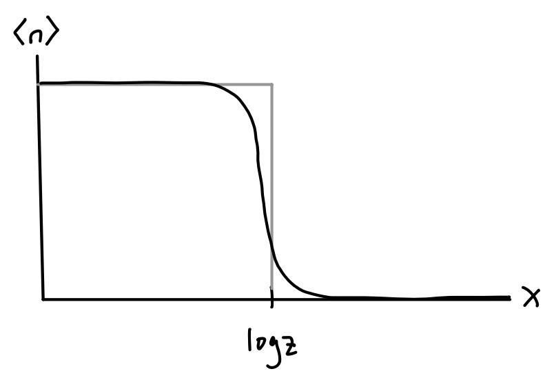
This means that to a crude approximation we can treat \(\langle n \rangle\) as a step function that jumps from one to zero at \(x = \log z\), which means near zero temperature we can approximately say \[ f_s^{-}(z) = \frac{1}{(s-1)!} \int_0^{\infty} dx \ \frac{x^{s-1}}{z^{-1} e^x + 1} \approx \frac{1}{(s-1)!} \int_0^{\log z} dx \ x^{s-1} = \frac{(\log z)^s}{s!} \ . \] Using the identity \(\log z = \beta\mu\), we then get \[ \begin{align*} N &= \frac{gV}{\lambda_T^3} \frac{(\beta\mu)^{3/2}}{(3/2)!} \ , \\ E &= \frac{3}{2 \beta} \frac{gV}{\lambda_T^3} \frac{(\beta\mu)^{5/2}}{(5/2)!} \ . \end{align*} \] Note the chemical potential \(\mu\) here should be thought of as a function of temperature \(T\). Near \(T=0\) the chemical potential should be some constant value. This value \(\varepsilon_F \equiv \mu_0\) is a constant with units of energy. It’s called the Fermi energy, which in terms of the density \(n\) is apparently given by \[ \varepsilon_F = \frac{2\pi\hbar^2}{m} \bigg(\frac{3\sqrt{\pi}n}{4g}\bigg)^{2/3} = \frac{\hbar^2}{2m} \bigg(\frac{6\pi^2 n}{g}\bigg)^{2/3} \ . \] Physically, we can think of the Fermi energy as the energy of the last occupied state in the Fermi gas. In a Fermi gas, at low temperatures the states will fill up from smallest to largest momentum in successive order. The state occupied by the final particle in the gas will have the highest momentum, which we call the Fermi momentum, given by \[ \varepsilon_F \equiv \frac{\hbar^2}{2m} \mathbf{k}_F^2 \ . \] Curiously, we can derive the expression for the Fermi energy directly from its definition as the last occupied state. If this is indeed the highest momentum state, this means in \(k\)-space all other particles must lie in or on the sphere whose radius is \(k_F=|\mathbf{k}_F|\). If we assume each particle can take on only their spin degrees of freedom \(g=2s+1\), this means we’d have \[ N = \sum_{k \leq k_F} g \approx \frac{gV}{(2\pi)^3} \int_0^{k_F} 4\pi k^2 dk = \frac{gVk_F^3}{6\pi^2} \ . \] Substituting in \(\varepsilon_F = \frac{\hbar^2}{2m} k_F^2\) into this formula and solving for \(\varepsilon_F\) in terms of \(n = \frac{N}{V}\) gives the expected result for \(\varepsilon_F\).
Since it’s useful we’ll go ahead and also define a Fermi temperature \(T_F\) using the relation \(\varepsilon_F \equiv k_B T_F\). If we now take the ratio \(\frac{E}{N}\) to get the energy in terms of particle number like we’re used to, we get \[ E = \frac{3}{5} N \varepsilon_F = \frac{3}{5} N k_B T_F \ . \] Interestingly, it seems the energy of a Fermi gas doesn’t go to zero at zero temperature. It tends to a positive constant. A Fermi gas always has energy due to the exclusion principle preventing the particles from falling into lower energy states. Similarly, a Fermi gas must have non-zero pressure at zero temperature as well since \(E = \frac{3}{2} PV\) implies \[ P V = \frac{2}{5} N \varepsilon_F = \frac{2}{5} N k_B T_F \ . \] This defines a Fermi pressure \(P_F \equiv \frac{2}{5} n \varepsilon_F\), usually called degeneracy pressure. It again arises from the exclusion principle due to the fact that we can’t squeeze the fermions arbitrarily close together.
Sommerfeld Expansion
These expressions tell us what to expect exactly at zero temperature. But what about near zero temperature? How do the equations of state interpolate between these values and the expected classical ones? To investigate this we’ll need to consider more than just the first term in the asymptotic expansion. We need the full asymptotic series now, which we derive below.
Let’s consider again the integral definition of \(f_s^{-}(z)\) and perform integration by parts by moving one of the derivatives from \(x^{s-1}\) to \(\langle n \rangle = \big(z^{-1} e^x + 1\big)^{-1}\). Then we have \[ \begin{align*} f_s^{-}(z) &= \frac{1}{(s-1)!} \int_0^{\infty} dx \ \frac{x^{s-1}}{z^{-1} e^x + 1} \\ &= \frac{1}{s!} \int_0^{\infty} dx \ x^s \frac{d}{dx} \frac{-1}{z^{-1} e^x + 1} \\ &\approx \frac{1}{s!} \int_{-\infty}^{\infty} dx \ x^s \frac{d}{dx} \frac{-1}{z^{-1} e^x + 1} \ . \end{align*} \] The last step requires some justification. Since \(\langle n \rangle\) is approximately a step function when \(z \gg 1\) its derivative must be approximately a delta function. This means the integrand will be sharply peaked around \(\log z\) and so extending the limits of integration to the whole real line is essentially immaterial, though convenient.
We’ll now make a change of variable. Let \(u = x - \log z\), meaning \(x = \log z + u\) and \(dx = du\). Substituting, doing a binomial expansion on \(x^s = (\log z + u)^s\), and then reversing the integration by parts, we get \[ \begin{align*} f_s^{-}(z) &\approx \frac{1}{s!} \int_{-\infty}^{\infty} du \ (\log z + u)^s \frac{d}{du} \frac{-1}{e^u + 1} \\ &= \frac{1}{s!} \int_{-\infty}^{\infty} du \sum_{\alpha=0}^\infty \binom{s}{\alpha} u^\alpha (\log z)^{s-\alpha} \frac{d}{du} \frac{-1}{e^u + 1} \\ &= \frac{(\log z)^s}{s!} \sum_{\alpha=0}^\infty \frac{s!}{\alpha!(s-\alpha)!} (\log z)^{-\alpha} \int_{-\infty}^{\infty} du \ u^\alpha \frac{d}{du} \frac{-1}{e^u + 1} \\ &= \frac{(\log z)^s}{s!} \sum_{\alpha=0}^\infty \frac{s!}{\alpha!(s-\alpha)!} (\log z)^{-\alpha} \alpha \int_{-\infty}^{\infty} du \ \frac{u^{\alpha-1}}{e^u + 1} \ . \end{align*} \] Now, the integrand in the last line, call it \(g(u)\), is always either an odd or even function depending on \(\alpha\). When \(\alpha\) is odd the integral must be zero, and when \(\alpha\) is even the integral must be twice the positive part, both by symmetry. Moreover, the positive part of the integral is just \((2\alpha-1)! f_{2\alpha}^{-}(1)\) since \(u\) is a dummy variable and \(z=1\). This means we have
\[ \begin{align*} f_s^{-}(z) &= \frac{(\log z)^s}{s!} \sum_{\alpha=0}^\infty \frac{s!}{(s-\alpha)!} (\log z)^{-\alpha} \frac{1}{(\alpha-1)!} \int_{-\infty}^{\infty} du \ \frac{u^{\alpha-1}}{e^u + 1} \\ &= \frac{(\log z)^s}{s!} \sum_{\alpha=0}^\infty \frac{s!}{(s-2\alpha)!} (\log z)^{-2\alpha} \frac{2}{(2\alpha-1)!} \int_0^{\infty} du \ \frac{u^{2\alpha-1}}{e^u + 1} \\ &= \frac{(\log z)^s}{s!} \sum_{\alpha=0}^\infty \frac{s!}{(s-2\alpha)!} (\log z)^{-2\alpha} 2f_{2\alpha}^{-}(1) \\ \end{align*} \] Now, the terms \(f_{2\alpha}^{-}(1)\) are kind of like zeta functions since \[ f_s^{-}(1) = -\text{Li}_s (-1) = \sum_{n=1}^\infty \frac{(-1)^n}{n^s} = 1 - \frac{1}{2^s} + \frac{1}{3^s} - \cdots \ . \] These functions are called eta functions, denoted \(\eta_s\), and are related to zeta functions via \(\eta_s = \big(1-2^{1-s}\big) \zeta_s\). This can be seen by separating the odd and even parts of the series and doing some factoring. Using this relationship along with the fact that zeta function values for even integers \(s=2\alpha\) have closed form solutions, we finally have \[ \begin{align*} f_s^{-}(z) &= \frac{(\log z)^s}{s!} \sum_{\alpha=0}^\infty \frac{s!}{(s-2\alpha)!} (\log z)^{-2\alpha} 2\big(1-2^{1-2\alpha}\big) \zeta_{2\alpha} \\ &= \frac{(\log z)^s}{s!} \bigg[1 + \zeta_2 \frac{s(s-1)}{(\log z)^2} + \frac{7\zeta_4}{4}\frac{s(s-1)(s-2)(s-3)}{(\log z)^4} + O\big((\log z)^{-6}\big) \bigg] \\ &= \frac{(\log z)^s}{s!} \bigg[1 + \frac{\pi^2}{6} \frac{s(s-1)}{(\log z)^2} + \frac{7\pi^4}{360}\frac{s(s-1)(s-2)(s-3)}{(\log z)^4} + O\big((\log z)^{-6}\big) \bigg] \ . \end{align*} \] This final series is known as the Sommerfeld expansion. Notice the leading term in the series is just \(f_s^{-}(z) \approx \frac{(\log z)^s}{s!}\), which we already expect. This leads to the Fermi values derived before. The higher order terms in the expansion involve reciprocal powers of \(\log z\), which act to give small corrections to the asymptotic expansion at large \(z\).
We can now use the Sommerfeld expansion to finally calculate the first few corrections to the equations of state at zero temperature. To do that we need to get the series for \(s=\frac{3}{2}\) and \(s=\frac{5}{2}\). Working only to the first correction, we have \[ \begin{align*} f_{3/2}^{-}(z) &= \frac{(\log z)^{3/2}}{(3/2)!} \bigg[1 + \frac{\pi^2/8}{(\log z)^2} + O\big((\log z)^{-4}\big) \bigg] \ , \\ f_{5/2}^{-}(z) &= \frac{(\log z)^{5/2}}{(5/2)!} \bigg[1 + \frac{5\pi^2/8}{(\log z)^2} + O\big((\log z)^{-4}\big) \bigg] \ . \end{align*} \] Again using the fact that \(\log z = \beta\mu\) we can read off the corrections to the equations of state. First, we have \[ N = \frac{gV}{\lambda_T^3} f_{3/2}^\eta(z) = \frac{gV}{\lambda_T^3} \frac{(\beta\mu)^{3/2}}{(3/2)!} \bigg[1 + \frac{\pi^2}{8} \bigg(\frac{k_B T}{\varepsilon_F}\bigg)^2 + O(T^4) \bigg] \ . \] We can use this formula to solve for the chemical potential \(\mu\) by rearranging terms to get \[ \mu = \frac{\hbar^2}{2m} \bigg(\frac{6\pi^2 N}{gV}\bigg)^{2/3} \bigg[1 + \frac{\pi^2}{8} \bigg(\frac{k_B T}{\varepsilon_F}\bigg)^2 + O(T^4) \bigg]^{-2/3} = \varepsilon_F \bigg[1 - \frac{\pi^2}{12}\bigg(\frac{T}{T_F}\bigg)^2 + O(T^4) \bigg] \ . \] This means the chemical potential is evidently a downward-sloping parabola at low temperatures with a vertex at the Fermi energy \(\varepsilon_F\). We also expect classically that \(\mu \sim -T \log T\) at high temperatures, so the two curves should smoothly interpolate somehow, as shown in the figure below. The transition regime occurs somewhere around the Fermi temperature \(T_F\).
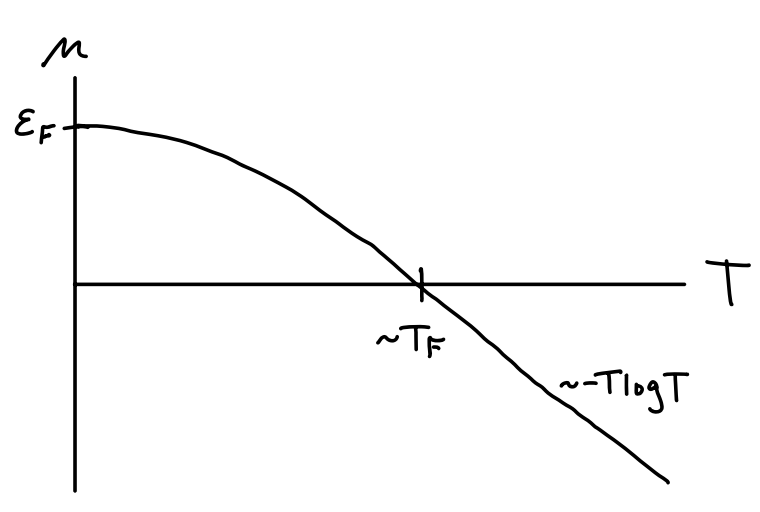
Next up, we can find the pressure by using the above expansion for \(\mu\) to get $$ \[\begin{align*} P &= \frac{g}{\beta\lambda_T^3} f_{5/2}^\eta(z) \\ &= \frac{g}{\beta\lambda_T^3} \frac{(\beta\mu)^{5/2}}{(5/2)!} \bigg[1 + \frac{5\pi^2}{8} \bigg(\frac{k_B T}{\varepsilon_F}\bigg)^2 + O(T^4) \bigg] \\ &= \frac{g}{\beta\lambda_T^3} \frac{(\beta\varepsilon_F)^{5/2}}{(5/2)!} \bigg[1 - \frac{\pi^2}{12}\bigg(\frac{T}{T_F}\bigg)^2 + O(T^4) \bigg]^{5/2} \bigg[1 + \frac{5\pi^2}{8} \bigg(\frac{T}{T_F}\bigg)^2 + O(T^4) \bigg] \\ &= P_F \bigg[1 + \frac{5\pi^2}{12}\bigg(\frac{T}{T_F}\bigg)^2 + O(T^4) \bigg] \ . \end{align*}\] $$ Evidently the correction to the pressure is also quadratic, but this time the parabola is upward sloping, causing pressure to increase with temperature. In the classical limit of course we expect pressure to become linear \(P \sim T\), with a turning point occurring again around the Fermi temperature \(T_F\). This is shown in the figure below.
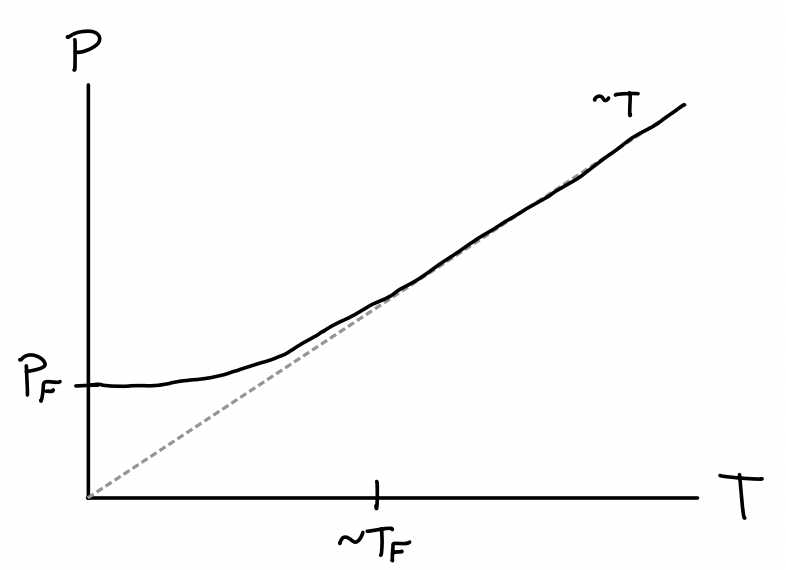
With the pressure in hand we can now proceed to calculate the average internal energy using the formula \(E = \frac{3}{2} PV\). We get \[ E = \frac{3}{5} N k_B T_F \bigg[1 + \frac{5\pi^2}{12}\bigg(\frac{T}{T_F}\bigg)^2 + O(T^4) \bigg] \ . \] Clearly the energy will also be an upward-sloping parabola at low temperatures and have \(E \sim T\) at high temperatures. Having energy as a function of temperature we can proceed to calculate the heat capacity for the Fermi gas at low temperatures. Differentiating with respect to \(T\) we get \[ C = \frac{\partial E}{\partial T} = N k_B \frac{\pi^2}{2} \bigg(\frac{T}{T_F}\bigg) + O(T^3) \ . \] Importantly, notice that at low temperatures the heat capacity of a Fermi gas is linear with a cubic correction. As \(T\) approaches the Fermi temperature \(T_F\) the heat capacity turns over and starts to behave classically, as shown in the figure below.
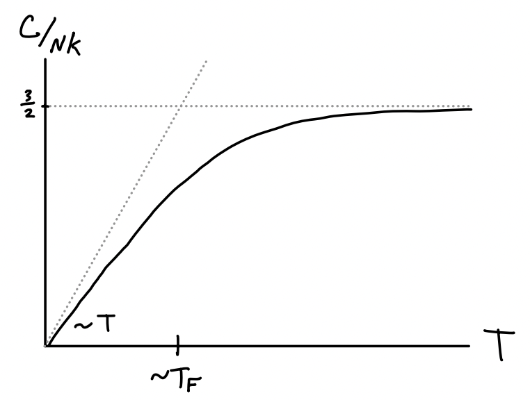
Perhaps the most important application of this result is to metals. Metals can be thought of as solids where internal electrons are allowed to move freely as an interacting Fermi gas. We already saw in a previous chapter that typical non-conducting solids are dominated by phonon effects at low temperatures, causing \(C \sim T^3\) when \(T \ll T_D\), where \(T_D\) is the solid’s Debeye temperature. Metals slightly modify this result by having \[ C \sim \gamma T + \alpha T^3 \] at low temperatures. We can imagine the linear term arising from the Fermi gas effects of the free electrons. In fact this isn’t exactly true since electrons do interact with each other via Coulomb forces. They’re not free particles, hence not ideal. Nevertheless, if we imagine the Coulomb interactions as being adiabatic in the sense of being “turned on slowly”, then their energy at low temperatures turns out to be the same as if the gas were ideal. Since the heat capacity of a metal at low temperatures would go something like \[ C \sim N k_B \bigg[\frac{\pi^2}{2} \bigg(\frac{T}{T_F}\bigg) + \frac{12\pi^4}{5} \bigg(\frac{T}{T_D}\bigg)^3 \bigg] \ , \] we can see at what temperature the Fermi and phonon effects become comparable by equating terms and solving for \(T\) to get \[ T \sim \sqrt{\frac{5T_D^3}{24\pi T_F}} \ . \] For a typical metal we’d have something like \(T_D \sim 10^2 \ ^\circ \text{K}\) and \(T_F \sim 10^4 \ ^\circ \text{K}\), meaning the linear term would become important only when temperatures get down to around \(T \sim 1 \ ^\circ \text{K}\).
Example: Paramagnetism
As another interesting application of the theory of Fermi gases, let’s consider the case of paramagnetism. A paramagnet is any material whose electron spins tend to align themselves parallel to an applied external magnetic field. Typically paramagnetic behavior is observed in materials whose atoms have an odd number of electrons so that some of them are left unpaired. Only these unpaired electrons contribute anything significant to the magnetization. Atoms with an even number of electrons experience a different and much weaker effect known as diamagnetism, where the electron spins tend to align themselves antiparallel to the external field. Both effects are significantly weaker than ferromagnetism, often by a factor of \(10^4\) or more.
The tendency of a material to respond to an external magnetic field \(\mathbf{B}\) is captured via its magnetization vector \(\mathbf{M}\). Its magnitude \(M\) is the average magnetic dipole moment per unit volume, which can be more usefully related to the difference between densities of up-spin to down-spin unpaired electrons by \[ M \equiv \frac{\langle m \rangle}{V} = \mu_B \frac{N_+ - N_-}{V} \ , \] where \(\mu_B \equiv \frac{e\hbar}{2m_ec} \approx 5.8 \cdot 10^{-9} \ \text{eV} \cdot \text{G}^{-1}\) is a constant known as the Bohr magneton. The magnetization depends on the strength of the external field. We can relate the two via a constituency relation whose form depends both on the material as well as the strength of the external field. In the simplest case where the material is isotropic and \(\mathbf{B}\) is sufficiently weak, \(\mathbf{M}\) will be approximately linear in the auxiliary field \(\mathbf{H} \equiv \mathbf{B} - 4\pi\mathbf{M}\), with \(\mathbf{M} \approx \chi \mathbf{H}\), where \(\chi\) is a proportionality constant known as the magnetic susceptibility. In the limit of a weak field we can approximate \(\mathbf{H} \approx \mathbf{B}\) and hence write \(\mathbf{M} \approx \chi \mathbf{B}\). Taking the derivative of the magnitude of both sides and reminding ourselves we’re in the weak field limit of \(B \rightarrow 0\), we evidently thus have \[ \chi = \frac{\partial M}{\partial B} \bigg |_{B=0} \ . \] The susceptibility \(\chi\) expresses essentially all of the material-specific properties that contribute to the magnetization. It’s thus useful to study its properties, for instance its dependence on thermodynamic variables like temperature or density.
For paramagnetic materials, we can express the Hamiltonian for a single electron to a decent approximation by \[ H_1 = \frac{\mathbf{p}^2}{2m} + \mu_B \boldsymbol{\sigma} \cdot \mathbf{B} \ , \] where \(m=m_e\) is the mass of the electron and \(\boldsymbol{\sigma}\) is the Pauli operator. It’s not too hard to see that the eigenstates of the \(\boldsymbol{\sigma} \cdot \mathbf{B}\) operator alone are two states \(|\pm\rangle\) with energies \(\varepsilon_{\pm} = \pm B\). To get the full energy eigenvalues we instead need to use the joint states \(|\mathbf{k}, \pm\rangle\). In terms of the joint states, the energy eigenvalues are given by \[ \varepsilon_{\mathbf{k}, \pm} = \frac{\hbar^2 \mathbf{k}^2}{2m} \pm \mu_B B \ . \] Since electrons are fermions, if we’re interested in low temperature behaviors we’ll need to treat the problem as a Fermi gas. This means we’ll need to proceed from here by again calculating the grand partition function \(\mathcal{Z}\) and going from there. We have \[ \begin{align*} \mathcal{Z} &= \sum_{N=0}^\infty e^{\beta\mu N} \text{ tr } e^{-\beta H} \\ &= \prod_\mathbf{k} \sum_{n_{\mathbf{k}, \pm}} e^{-\beta n_{\mathbf{k}, \pm}\big(\varepsilon_{\mathbf{k}, \pm} - \mu\big)} \\ &= \prod_\mathbf{k} \bigg(1 + e^{-\beta \big(\varepsilon_{\mathbf{k}} - \mu + \mu_B B\big)}\bigg) \bigg(1 + e^{-\beta \big(\varepsilon_{\mathbf{k}} - \mu - \mu_B B\big)}\bigg) \\ &= \prod_\mathbf{k} \bigg(1 + e^{-\beta \big(\varepsilon_{\mathbf{k}} - \mu_+\big)}\bigg) \bigg(1 + e^{-\beta \big(\varepsilon_{\mathbf{k}} - \mu_-\big)}\bigg) \\ \end{align*} \]
Here we’ve define \(\mu_\pm \equiv \mu \mp \mu_B B\) to be effective chemical potentials and \(z_\pm \equiv e^{\beta\mu_\pm}\) to be the effective fugacities. From here, we can take the logarithm and simplify by again using the density of states and the same substitutions to get \[ \begin{align*} \log \mathcal{Z} &\approx \frac{2V}{(2\pi)^3} \int d^3 \mathbf{k} \ \bigg[\log \bigg(1 + z e^{-\frac{\beta\hbar^2}{2m} \mathbf{k}^2} e^{-\beta \mu_B B}\bigg) + \log \bigg(1 + z e^{-\frac{\beta\hbar^2}{2m} \mathbf{k}^2} e^{\beta \mu_B B}\bigg)\bigg] \\ &= \frac{2V}{\lambda_T^3} \frac{1}{(3/2)!} \int_0^\infty dx \ \bigg[\frac{x^{3/2}}{z_{+}^{-1} e^x + 1} + \frac{x^{3/2}}{z_{-}^{-1} e^x + 1}\bigg] \\ &= \frac{2V}{\lambda_T^3} \big[f_{5/2}^{-}\big(z_+\big) + f_{5/2}^{-}\big(z_-\big)\big] \ . \end{align*} \] Note we used the fact that the spin degeneracy for an electron is \(g=2\). From here we can proceed to calculate the mean up-spin and down-spin densities \(n_\pm = \frac{N_\pm}{V}\). Using the differentiation ladder relation for polylogarithms, we just have \[ n_\pm = \frac{1}{V} \frac{\partial \log\mathcal{Z}}{\partial (\beta\mu_\pm)} = \frac{z_\pm}{V} \frac{\partial \log\mathcal{Z}}{\partial z_\pm} = \frac{2}{\lambda_T^3} f_{3/2}^{-}\big(z_\pm\big) \ . \] This means the magnetization \(M\) is just given by \[ M = \frac{2}{\lambda_T^3} \big[f_{3/2}^{-}\big(z_+\big) + f_{3/2}^{-}\big(z_-\big)\big] \ , \] from which we can conclude the susceptibility \(\chi\) is given by \[ \chi = \frac{\partial M}{\partial B} \bigg |_{B=0} = \frac{4\beta\mu_B^2}{\lambda_T^3} f_{1/2}^{-}(z) \ . \] Since this expression isn’t all that informative as is let’s analyze the behavior of \(\chi(T)\) in the high and low temperature limits. It’ll be useful to write things in terms of \(N\), which we can get from the relation \[ N = N_+ + N_- = \frac{2V}{\lambda_T^3} \big[f_{3/2}^{-}\big(z_+\big) + f_{3/2}^{-}\big(z_-\big)\big] \ . \] At high temperatures we can use the fact that \(f_{1/2}^{-}(z) \approx z\) to get \(N \approx \frac{4V}{\lambda_T^3} z\) and hence \[ \chi(T) \approx \frac{n\mu_B^2}{k_B T} \equiv \frac{C}{T} \ . \] This is a well-known result for paramagnetic materials, known as Curie’s Law. As the temperature of the material increases its susceptibility decreases in constant proportion. Of course, this law fails in the low temperature limit.
In the low temperature limit we can use the Sommerfeld expansion in the weak field limit to write \(f_s^{-}(z_\pm) \approx \frac{\beta^s\mu^s}{s!}\). From here, we can express \(N \approx \frac{4V}{(3/2)!} \frac{\beta^{3/2}}{\lambda_T^3} \varepsilon_F^{3/2}\) and plug this back into \(\chi\) to get the following relation in the low temperature limit, \[ \chi(T) \approx \frac{3\mu_B^2 n}{2k_B T_F} \bigg[1 - \frac{\pi^2}{12} \bigg(\frac{T}{T_F}\bigg)^2 + O(T^4) \bigg] \ . \] As we’d expect, the susceptibility goes to a positive constant \(\chi_F\) in the low temperature limit. The first quadratic correction is negative, meaning \(\chi(T)\) will decrease and eventually go like \(\chi(T) \sim \frac{C}{T}\) in the high temperature limit, as shown below.
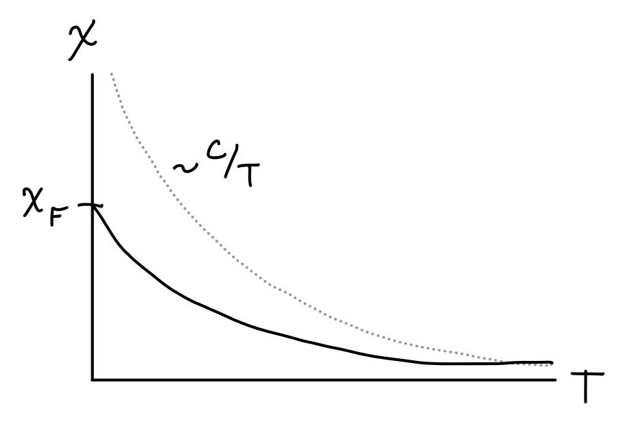
Degenerate Bose Gas
We’ll now consider the case of the degenerate Bose gas at low temperatures. Bosons at low temperatures behave quite differently from fermions. While fermions form a Fermi sphere of states of ever-increasing momentum, bosons instead eventually all pile into their ground state in a phenomenon known as Bose-Einstein Condensation.
Unlike with the fermi function \(f_s^{-}(z)\) which is well-defined for all \(z\), the boson function \(f_s^{+}(z)\) is only well-defined when \(|z| \leq 1\). To see why this is the case physically and not just mathematically, consider again the Bose-Einstein distribution \[ \langle n_\mathbf{k} \rangle = \frac{1}{e^{\beta(\varepsilon_\mathbf{k}-\mu)} - 1} \ . \] Since \(\langle n_\mathbf{k} \rangle\) is an occupation number it must be non-negative. This can only happen if \(\mu \leq \varepsilon_\mathbf{k}\) for any value of \(\varepsilon_\mathbf{k}\). Since \(\min \varepsilon_\mathbf{k} = 0\) is the smallest energy possible, this means we must have \(\mu \leq 0\). Since we expect \(\mu\) to increase as \(T\) decreases, it’s reasonable to expect that \(\mu \rightarrow 0\) as \(T \rightarrow 0\). And since \(\mu\) goes to zero like \(\mu \sim k_B T \log \frac{n\lambda_T^3}{g}\), this means we must have \(z \rightarrow 1\) as \(T \rightarrow 0\). Thus, studying the low temperature limit for bosons is essentially equivalent to studying the behavior of \(f_s^{+}(z)\) as \(z \rightarrow 1\) from below.
As we saw before, the polylogarithm increases monotonically with \(z\), hitting the finite value of \(\zeta_s = f_s^{+}(1)\) at \(z=1\) provided \(s > 1\), or blowing up to infinity at \(z=1\) otherwise. Together these imply we should have \[ \frac{n\lambda_T^3}{g} = f_{3/2}^{+}(z) \leq \zeta_{3/2} \approx 2.61 \ . \] But physically this doesn’t quite make sense at low temperatures. We generally think of \(n=\frac{N}{V}\) as being fixed, reflecting in essence the conservation of mass. But the only way \(n\) can stay fixed as \(T \rightarrow 0\) is for \(f_{3/2}^{+}(z) \rightarrow \infty\) as \(\lambda_T \rightarrow \infty\). But this isn’t happening here since \(f_{3/2}^{+}(z) \rightarrow \zeta_{3/2}\) instead. So what’s going on?
If we step back and think about the quantum mechanics of the situation, we should realize that the lowest energy state each particle can occupy is its ground state. It would thus make sense at the lowest temperatures for particles to start to move into their ground states. Though non-obvious, our formulas aren’t keeping track of the particles in the ground state at all due to the subtleties in the density of states approximation, which expressed in terms of the energy is given by \[ \sum_{\mathbf{k}} \approx \frac{(2m)^{3/2} V}{4\pi^2\hbar^3} \int dE \ \sqrt{E} \ . \] Because of the \(\sqrt{E}\) weight inside the integrand, the ground state energy \(E=0\) doesn’t contribute at all to the integral. When temperatures are away from zero this isn’t a major issue since comparatively few particles are in their ground states. But very near zero temperature it becomes a much bigger deal.
We can attempt to correct for this efficiency by counting the ground state contributions separately from the excited states. For the excited states we’ll continue to use the density of states approximations, which gives the results we saw before. For the ground states, all we have to do is observe that the Bose-Einstein distribution says the expected number of particles in the ground state at a given fugacity \(z\) is just \[ N_0 \approx \langle n_0 \rangle = \frac{1}{z^{-1} - 1} = \frac{z}{1-z} \ . \] All we have to do is break the density up into two pieces, the ground state density \(n_0\) and the excited state density \(n_>\), \[ N = N_0 + N_> = \frac{z}{1-z} + \frac{gV}{\lambda_T^3} f_{3/2}^{+}(z) \ . \] We can define a useful critical temperature \(T_c\) by seeing at what temperature \(\frac{N\lambda_T^3}{gV} = \zeta_{3/2}\), which turns out to be \[ T_c \equiv \frac{2\pi\hbar^2}{mk_B} \bigg(\frac{N}{\zeta_{3/2} gV}\bigg)^{2/3} \ . \] The critical temperature evidently tells us something about how many particles occupy the ground state. The fraction of total particles in the ground state or excited states at a given temperature is evidently \[ \frac{N_0}{N} = 1 - \frac{gV}{N\lambda_T^3} \zeta_{3/2} = 1 - \bigg(\frac{T}{T_c}\bigg)^{3/2} \quad , \quad \frac{N_>}{N} = \frac{gV}{N\lambda_T^3} \zeta_{3/2} = \bigg(\frac{T}{T_c}\bigg)^{3/2} \ . \] Notice \(N_> \approx N\) when \(T \geq T_c\), so we need only worry about the excited states. But when \(T \approx 0\) the opposite is true, with all particles crowding into the ground state to give \(N \approx N_0\). We can see this tradeoff between occupied states in the figure below.
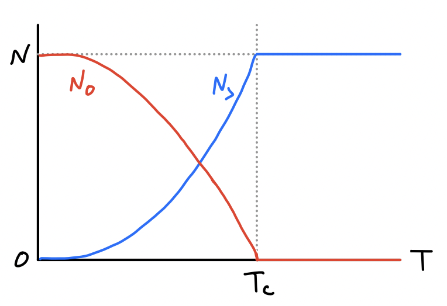
This phenomenon where bosons all pile into their ground state below some temperature is called Bose-Einstein Condensation or BEC. Note that critical temperatures are generally very close to zero, for example water has a critical temperature of about \(T_c \approx 0.06 \ ^\circ\text{K}\). This means for BEC to be seen at all a gas needs to be cooled to almost exactly \(T=0\).
In a similar vein, we can find formulas for the pressure and energy at low temperatures. In these cases, the contribution from the ground state is negligible in the thermodynamic limit since they’re a factor of \(N\) less than the excited state contributions. This means for all \(T\) we can safely write \[ P = k_B T \frac{g}{\lambda_T^3} f_{5/2}^{+}(z) \quad , \quad E = \frac{3}{2} k_B T\frac{gV}{\lambda_T^3} f_{5/2}^{+}(z) \ . \] When \(T < T_c\) we just need to replace \(f_{5/2}^{+}(z)\) by \(\zeta_{5/2} \approx 1.41\) to get the correct results near \(T=0\), \[ P = k_B T \frac{g}{\lambda_T^3} \zeta_{5/2} \quad , \quad E = \frac{3}{2} k_B T \frac{gV}{\lambda_T^3} \zeta_{5/2} \ . \] In particular, notice that when \(T < T_c\) both the pressure and energy go like \(T^{5/2}\), while perhaps strangely the pressure doesn’t depend at all on the density \(n=\frac{N}{V}\) anymore since the ground state particles no longer contribute to the pressure. This means even though \(P = n k_B T\) in the high temperature limit, at low temperatures it always follows the same curve, as shown below.
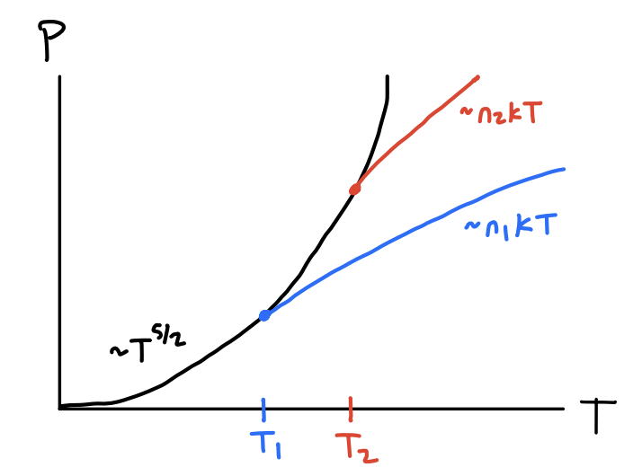
As is pretty much custom by now, we’ll differentiate energy with respect to temperature to get the heat capacity. To do this we need to keep the \(f_{5/2}^{+}(z)\) in the formula even below \(T_c\) since \(z\) itself depends implicitly on temperature. One can then show using the relation \(N = \frac{gV}{\lambda_T^3} f_{3/2}^{+}(z)\) and the ladder relationship \(\frac{d}{dz} f_s^{+}(z) = \frac{1}{z} f_{s-1}^{+}(z)\) that \[ \begin{align*} C = \frac{\partial E}{\partial T} &= \frac{15}{4} \frac{gV}{\lambda_T^3} k_B f_{5/2}^{+}(z) + \frac{3}{2} \frac{gV}{\lambda_T^3} k_B T \frac{df_{5/2}^{+}(z)}{dz} \frac{\partial z}{\partial T} \\ &= \frac{3}{2} k_B \frac{gV}{\lambda_T^3} \bigg[\frac{5}{2} f_{5/2}^{+}(z) - \frac{3}{2} \frac{\big(f_{3/2}^{+}(z)\big)^2}{f_{1/2}^{+}(z)}\bigg] \ . \end{align*} \] When \(T \gg T_c\) we can use the approximation \(f_s^{+}(z) \approx z\) to recover the classical result of \(C = \frac{3}{2} N k_B\). When \(T < T_c\) the second term goes to zero since \(f_{1/2}^{+}(z) \rightarrow \infty\) as \(z \rightarrow 1\). In that limit we evidently have \[ C = \frac{15}{4} k_B \frac{gV}{\lambda_T^3} \zeta_{5/2} = \frac{15}{4} \frac{\zeta_{5/2}}{\zeta_{3/2}} \bigg(\frac{T}{T_c}\bigg)^{3/2} \ . \] Evidently near zero temperature the heat capacity of a boson goes like \(T^{3/2}\), which is very different from fermions. The way the two limits join in this case though is particularly interesting. It turns out they join at a kink above \(\frac{3}{2} Nk_B\) as shown below.
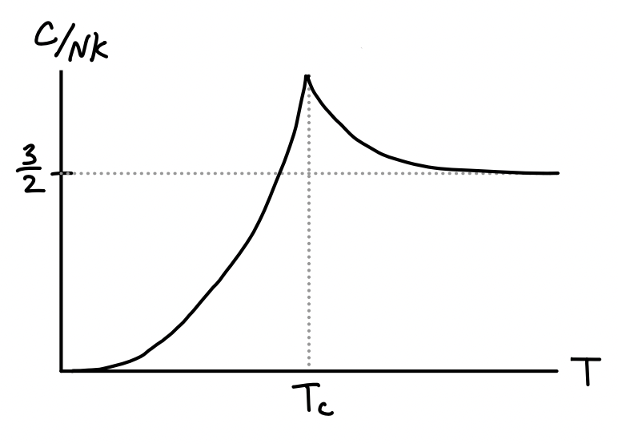
To see why this is true we need to study the behavior when \(T > T_c\) but \(T \approx T_c\). This can be seen by expanding the heat capacity when \(T > T_c\) and observing that the corrections increase the heat capacity from \(\frac{3}{2} N k_B\). This expansion turns out to be \[ C = \frac{3}{2} N k_B \bigg[1 + \frac{\lambda_T^3}{2^{7/2}} n + O(n^2) \bigg] \ . \] This lack of smoothness in the heat capacity can be thought of as a phase transition at \(T=T_c\). Bosons below the critical temperature can be thought of as a distinct state of matter. We can further see this by looking at the compressibility \(\kappa_T\), \[ \kappa_T = \frac{1}{V} \frac{\partial V}{\partial P} \bigg |_{T,N} = \frac{1}{n} \frac{\partial n / \partial z}{\partial P / \partial z} \bigg |_{T,N} = \frac{1}{nk_BT} \frac{f_{1/2}^{+}(z)}{f_{3/2}^{+}(z)} \ . \] Notice as \(z \rightarrow 1\) at the critical temperature that \(f_{1/2}^{+}(z) \rightarrow \infty\) and so \(\kappa_T \rightarrow \infty\) as well. This means the isotherms of the \(PV\)-diagram become flat when \(T<T_c\) similar to the way they do for the van der Waals interaction, indicating coexistence.
Another example of a low-temperature phase transition for bosons is a different phenomenon known as superfluidity. For example, helium is known to come in two common isotopes, helium-3 and helium-4. Helium-3 is a fermion since it contains 2 protons, 2 electrons, and a single neutron. Meanwhile, helium-4 is a boson since it contains 2 protons, 2 electrons, and 2 neutrons. At typical pressures helium never forms a solid at low temperatures. It instead forms a superfluid, which is a liquid with many similar properties to BEC. Superfluids have the interesting property that they have zero viscosity, meaning they can seep through whatever container they’re in when the temperature gets below some critical temperature \(T_c\). For helium-4 this temperature is known to be about \(T_c \approx 2.2 \ ^\circ\text{K}\) at standard pressure.